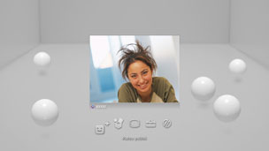
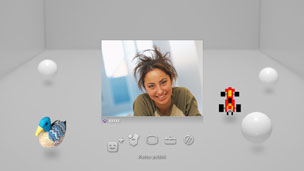

Ystävät > Ääni- ja videochat > Ääni- tai videochatin aloittaminen ja lopettaminen
Ääni- tai videochatin aloittaminen ja lopettaminen
Tämän toiminnon käyttäminen saattaa edellyttää, että käyttöjärjestelmä päivitetään.
Voit keskustella Ystävät-luettelossa olevien henkilöiden kanssa ääni- tai videochatin avulla. Äänichattiin tarvitaan ääntä lähettävä ja vastaanottava laite (kuten kuulokemikrofoni, joka on lisävaruste). Videochattiin tarvitaan lisäksi USB-kamera (lisävaruste).
Ääni- tai videochatin aloittaminen
1. |
Valitse |
|---|---|
2. |
Valitse  |
3. |
Valitse näyttöön tulevasta valikosta |
4. |
Kirjoita viesti ja valitse sitten [Lähetä].  Jos henkilö liittyy chatiin, hänen kuvansa tulee näkyviin ja ääni- tai videochat alkaa. |
 (Ystävät) >
(Ystävät) >  (Aloita uusi chat).
(Aloita uusi chat). (Ääni-/videochatin aloittaminen).
(Ääni-/videochatin aloittaminen). (Kutsu ystävä).
(Kutsu ystävä).Vihjeitä
- PS3™-järjestelmä tukee ääni- ja videochat-toimintoja. Muita chat-toimintoja, kuten pelinaikaista chattia, voi mahdollisesti käyttää peliohjelmistojen avulla. Lisätietoja on ohjelmiston käyttöohjeissa.
- Chat edellyttää, että olet kirjautunut PlayStation®Networkiin.
- Voit kutsua chat-huoneeseen useita ystäviä, mutta vain viiden ensimmäiseksi valitun ystävän avatarit näkyvät näytössä.
- Chat-huoneeseen voi liittyä enintään kuusi henkilöä.
- Ääni- ja videochat-toimintoa ei voi käyttää, jos sen käyttöä on rajoitettu PlayStation®Network-tilin asetuksissa. Lisätietoja lapsilukon asetuksista on tämän oppaan kohdassa [Tietoja XMB™-valikosta] > [Lapsilukko-ominaisuuden käyttäminen].
- PS3™-järjestelmässä voi käyttää yhteensopivaa USB-kuulokemikrofonia/Bluetooth®-kuulokemikrofonia/USB-kameraa (EyeToy™)/PlayStation®Eye-kameraa/USB-kameraa, joka on UVC (USB video class) -yhteensopiva.
- Jos kytket USB-kameran USB-keskittimen kautta, käytä keskitintä, joka tukee USB 2.0-nopeutta. Jos käytät keskitintä, joka ei tue USB 2.0-nopeutta, kuva saattaa näkyä huonosti tai olla näkymättä ollenkaan.
- Lisätietoja tuetuista oheislaitteista ja niiden käytöstä saa oheislaitteiden jälleenmyyjältä.
Chat-huoneesta poistuminen (ääni- tai videochatin lopettaminen)
Valitse chatin aikana  (Poistu) ohjauspaneelista.
(Poistu) ohjauspaneelista.
Vihje
Jos ääni- tai videochatin aloittanut henkilö poistuu chatistä, chat-huone sulkeutuu.